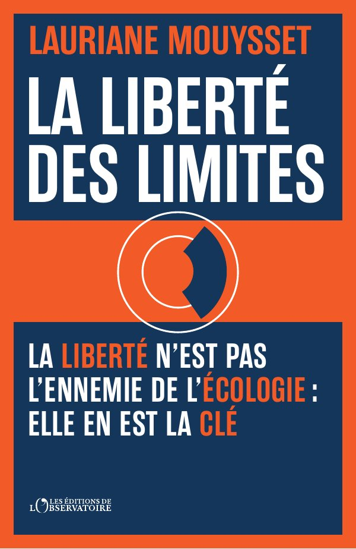

Viabilité, économie et démocratie
Essai paru aux Éditions de l'Observatoire le 24 septembre 2026.

Réduire sa consommation, limiter ses déplacements, renoncer à certains éléments de confort : autant de mesures prises au nom de l'urgence écologique, et aussitôt vécues comme des sacrifices par la majorité des Français. Car la liberté demeure bien notre valeur préférée !
Lauriane Mouysset retourne le problème et propose de refonder la notion de liberté. De même qu'un navigateur ne peut supprimer ni le vent ni les courants, mais apprend à les connaître pour tracer sa route, nous devons comprendre que notre dépendance aux écosystèmes n'entrave pas notre liberté : elle en est le ressort.
S'appuyant sur son parcours singulier à travers l'écologie, l'économie et la philosophie, l'autrice donne à chacun les outils pour juger si une décision au nom de l'écologie est viable, légitime et démocratique.